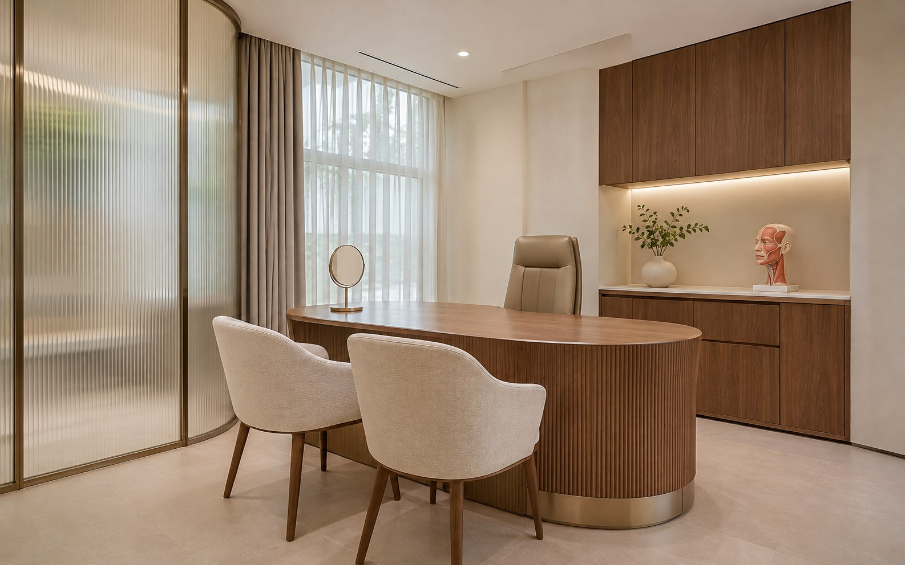

접수대와 대기실
대기 의자, 소파 주변, 접수대의 협의된 외부 표면, 바닥·출입구 주변 등 방문객이 이용하는 일반 공간을 관리합니다. 개인정보가 노출될 수 있는 접수용 모니터·서류에는 접근하지 않습니다.
성형외과의 대기공간, 상담실, 일반 공용구역은 환자와 의료진의 이용 흐름을 고려해 관리해야 합니다. 원내케어는 병원에서 허용하는 청소 구역과 작업시간을 명확히 정하고, 정기적인 일반 환경청소를 상담합니다.
공간의 역할을 이해하고, 청소할 수 있는 범위부터 구분합니다.

성형외과에는 일반 대기실과 상담실뿐 아니라 병원에 따라 출입이 제한되는 진료·처치 관련 공간도 있습니다. 일반 정기청소를 계획할 때는 각 구역이 환자에게 개방된 공간인지, 병원 직원이 별도로 관리해야 하는 공간인지 구분해야 합니다.
원내케어는 청소 가능한 일반 공간의 범위를 정하고, 이용 시간과 동선을 고려해 작업 순서를 협의합니다. 전문적인 멸균 작업이나 임상 기구 처리는 일반 청소와 구분합니다.
핵심 점검 세 가지
대기 의자, 소파 주변, 접수대의 협의된 외부 표면, 바닥·출입구 주변 등 방문객이 이용하는 일반 공간을 관리합니다. 개인정보가 노출될 수 있는 접수용 모니터·서류에는 접근하지 않습니다.
상담 테이블 주변, 상담 의자와 가구 하부, 접근 가능한 바닥을 점검합니다. 환자 사진과 상담 자료, 임상 기록은 작업 대상에 포함하지 않습니다.
병원에서 일반 청소가 허용된 회복 대기공간 주변의 바닥·공용 집기 외부 등을 협의된 범위에서 관리할 수 있습니다. 환자 케어, 침상 소독, 의료장비·의료용품 처리 등 전문 임상 업무는 포함하지 않습니다.
일반 동선의 바닥과 접근 가능한 표면, 화장실 등 기본 청소 범위를 확인합니다. 화장실 전용 도구를 구분하고 병원의 출입·보안 규칙을 따릅니다.
수술실, 멸균구역, 처치실의 임상 기구 및 의료장비 관리에는 병원 자체의 감염관리 절차와 전문 인력 기준이 적용될 수 있습니다. 이러한 업무를 일반적인 정기청소 서비스와 혼동해서는 안 됩니다.
원내케어의 기본 안내 범위에는 수술실 멸균, 의료기구 처리, 의료장비 내부 분해·센서 접촉, 의료폐기물 수거가 포함되지 않습니다. 병원과 사전에 협의한 일반 공간의 청소 범위에서 서비스를 안내합니다.
작업하기 어려운 구역이 있다면 견적 상담 단계에서 출입 제한 및 제외 범위를 문서로 확인하는 것이 좋습니다.
| 단계 | 확인 사항 | 결과 |
|---|---|---|
| 상담 | 진료시간·면적·구역별 출입 가능 여부 | 기본 요구사항 정리 |
| 범위 확인 | 대기·상담·공용공간과 제한 구역 구분 | 포함/제외 목록 |
| 방문계획 | 청소 인원·작업시간·주당 횟수 협의 | 병원 일정에 맞춘 계획 |
| 정기관리 | 일반 공간의 청소 및 상태 점검 | 보완사항 확인 |
업체교체를 검토할 때에는 눈에 보이는 청결 상태뿐 아니라 계약에 명시된 작업 범위, 담당 인력의 연속성, 병원 보안 기준 준수도 함께 확인해야 합니다.
특히 서로 다른 업체의 견적을 비교할 때는 방문 횟수, 1회 작업시간, 화장실 포함 여부, 가구 하부 청소 범위, 별도 대청소 조건을 동일하게 놓고 비교하는 것이 좋습니다.
기본 정기청소의 제공 범위에는 수술실 멸균·임상 기구 처리 등이 포함되지 않습니다. 상담 시 일반 청소 가능 구역과 병원 자체 관리 구역을 먼저 구분합니다.
병원의 이용시간과 실제 작업자 운영 가능 여부를 검토하여 방문 시간을 협의합니다. 확정되지 않은 특정 시간대 작업을 사전에 보장하지 않습니다.
네. 현재 계약의 해지 조건을 먼저 확인하시고, 새로운 업체에 원하는 작업 범위와 방문주기를 같은 기준으로 제시하시면 비교에 도움이 됩니다.
서울·경기 지역의 성형외과 정기청소 상담이 가능합니다. 강남구·서초구·송파구·강동구의 기본 서비스 안내는 아래에서 확인하실 수 있습니다.
상담실 수, 공용공간 구성, 희망 방문 주기와 출입 제한을 알려주시면 일반 환경청소 범위를 검토하겠습니다.